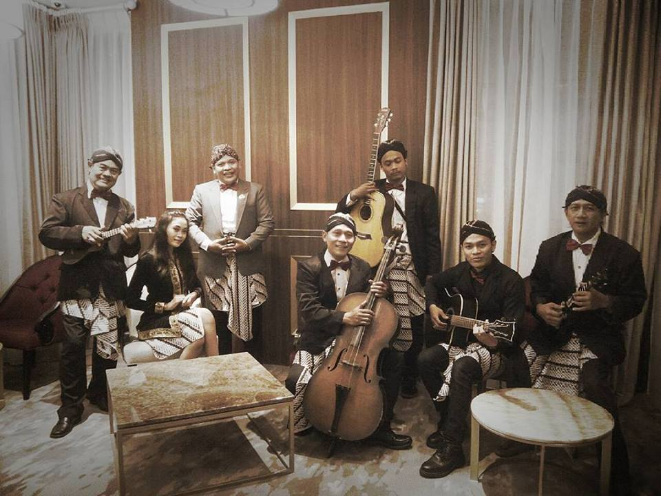

Potensi Seni dan Budaya
Keroncong merupakan seni music yang menggabungkan alat musik tradisional seperti “Bass Bethot”,Biola, “Gitar Kencrung “/Okulele, Keyboard dengan membawakan nyanyian lagu klasik sampai dengan modern. Kesenian keroncong ini ada di Desa jagalan, dan salah satu yang masih berkiprah adalah Keroncon Karisma. Kelompokk kesenian inilah masih sering menunjukkan performance diberbagai acara seperti Resepsi Pernikahan, Peresmian took dll.
